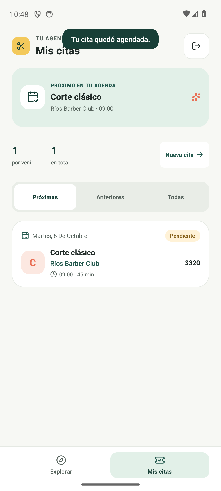

1. Registro de cliente y reserva
.maestro/cliente-registro-y-reserva.yaml
- Objetivo
- Crear una cuenta, explorar profesionales y persistir una cita pendiente.
- Precondiciones
- App instalada en Android, datos locales restablecidos y profesional demo con servicio y disponibilidad.
- Elegir cliente y abrir registro.
- Ingresar nombre, correo y contraseña de prueba.
- Filtrar Barbería y abrir Ríos Barber Club.
- Elegir Corte clásico, el primer día y las 09:00.
- Revisar y aceptar la reserva; comprobar la cita en Mis citas.
Resultado esperado: La cita aparece en la agenda del cliente y permanece guardada en SQLite.
Resultado observado: Flow completado con código de salida 0 y captura real.
